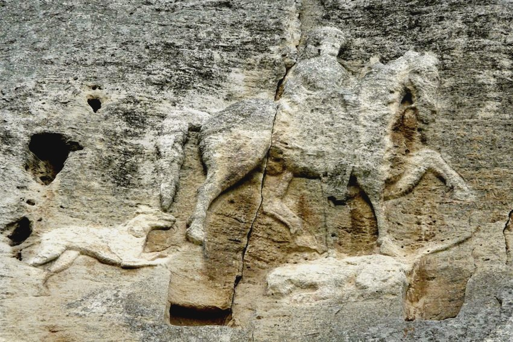

Мадарският конник
Опознай родината, за да я обикнеш!
Алеко Константинов


Мадарският конник представлява уникален скален релеф датиращ от началото на 8 век. Релефът е изсечен върху стометрова, почти отвесна варовикова скала и е единственият подобен релеф на територията на цяла Европа. Разположен е до село Мадара, на около 20 км. от град Шумен.
Този забележителен паметник се състои от три фигури – конник, куче и лъв. Централната фигура – конникът, е представена в реален размер и е разположена най-високо. Той е облечен в дреха до колене, стои върху седло с високо облегало и десният (видимият) му крак е пъхнат в стреме. Под предните крака на коня е разположен легнал лъв, а зад коня е изобразено тичащо куче, устремено към лъва.
Поради ерозията на скалата и лошото състояние на фигурите, останалите елементи от композицията са спорни и нееднозначни. Съществуват три предположения за предмета, който конникът държи в лявата си ръка: кана с вино, ловджийски рог или поводите на коня. По отношение на дясната ръка някои приемат, че с нея конникът хвърля копие срещу поваления лъв, а други считат, че държи юздата на коня. Изказани са мнения, че ездачът е с наметало или с калъф за стрели. Повечето изследователи смятат, че лъвът е прободен от копието, но има и такива, които твърдят, че то не се забива в него. Някои учени дори откриват още фигури в композицията като орел и змия.
В скалата около нея са изсечени три надписа на гръцки език, отнасящи се до събития от българската история от началото на VIII до първата половина на IX век. Най-старият надпис е от управлението на кан Тервел и разказва за помощта, която владетелят оказва на византийския император Юстиниан II Носоотрязания при връщането му на престола в Константинопол. Споменават се и чичовците на хана, обитаващи областта около Солун.
Съществуват тези, че конникът, изобразен на Мадарския барелеф, вероятно е някой от българските владетели - Аспарух, Тервел или Крум. Засега най-много поддръжници намира становището, че конникът представя хан Тервел или обобщен образ на владетелите от Плиска. В този ред на мисли той се възприема като символ на българската държавна мощ и демонстрация на самочувствието на нейните владетели от езическия период. Официално е прието, че лъвът е прободеният и победен лъв символизира Византия, но споровете за това не са приключили.
Този забележителен скален релеф от Ранното средновековие е единствен по рода си в Европа. През 1979 година влиза в списъка на ЮНЕСКО за световното културно наследство, а три десетилетия по-късно е обявен за глобален български символ от проведената национална анкета.
